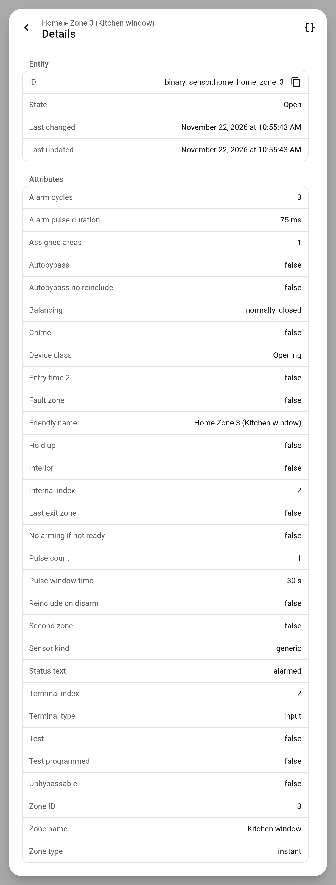

Entities¶
Your panel appears in Home Assistant as one device, named as you chose at setup. Its entities are the areas, zones, scenarios and outputs you import, plus a few sensors about the panel itself. Open the device page from Settings → Devices & services → Inim SmartLiving Alarm.
What you get¶
| Part | Entities | What you do with them |
|---|---|---|
| The panel | an alarm panel | Arm and disarm with the alarm panel card, using your scenarios |
| Each area | a switch, an arming mode select, three binary sensors | Arm or disarm the area; see alarm, tamper and alarm memory |
| Each zone | a binary sensor, a switch, two more binary sensors | See whether the zone is open; bypass it; see tamper and alarm memory |
| Each scenario | a button, a binary sensor | Run the scenario; see whether it is active |
| Each output | a switch, or a light for dimmers | Switch or dim the output |
| The panel's state | sensors | The event log, the active scenario, firmware and model |
| Diagnostics | sensors, a select, a button | The user code, the devices found, programming mode, system reports, re-reading the configuration |
For example, the tile cards of an area: its arming mode, its switch and its alarm memory.


Entity IDs
Entity IDs start with your panel's name: with the name Home, area 1's switch is switch.home_home_area_1 on a new installation (the name appears twice, see Known limitations), or switch.home_area_1 on one set up with an earlier version. The tables below give the end of each ID; N is the area, zone or scenario number. Every entity is enabled by default, except Diagnostics level.
The alarm panel¶
| ID ends with | Name | States |
|---|---|---|
alarm_control_panel.… |
the panel's name | armed home, armed away, armed night, armed vacation, armed custom bypass, disarmed, triggered |
The alarm panel arms and disarms with the scenarios you mapped in the options. Use it with Home Assistant's alarm panel card. No code is asked.
How the state is worked out
- Triggered while any area is in alarm.
- Otherwise the mode whose scenario is active on the panel, for example Armed night.
- A scenario active on the panel that is not mapped to a mode shows as Armed custom bypass.
- Without a mapped Disarm scenario, the state is unknown when no mapping matches.
- Only the arm modes with a mapped scenario are offered. Disarming or arming without a mapped scenario fails with a message ("No scenario is mapped to … choose one in the integration options").
Areas¶
| ID ends with | Name | States | Device class |
|---|---|---|---|
switch.…_area_N |
panel Area N (name) | on when armed in any mode | – |
select.…_area_N_arming_mode |
Area N arming mode | Disarmed, Armed total, Armed partial, Armed instant | – |
binary_sensor.…_area_N_alarm |
Area N Alarm (name) | on while the area is in alarm | safety |
binary_sensor.…_area_N_tamper |
Area N Tamper (name) | on while the area is in tamper | tamper |
binary_sensor.…_area_N_triggered |
Area N Alarm memory (name) | on after an alarm, until the memory is reset | safety |
- The switch arms the area when you turn it on and disarms it when you turn it off. It arms in the area's own mode set under Area switches arm mode per area, else in Area switches default arm mode (total by default).
- The arming mode select arms the area in the mode you choose, or disarms it. If the panel refuses, an error says why. It is unknown while the panel reports none of the four modes.
- The alarm memory stays on after an alarm until it is reset (see Resetting the alarm memory). Home Assistant shows the safety class as Unsafe while it is on.
Arming from the switch or the select checks the zones first: see Zones not ready.
Attributes of the area entities
| Attribute | On | Values |
|---|---|---|
area_id |
all area entities | the area's number |
area_name |
all area entities | the area's name on the panel |
status_text |
switch | armed, disarmed, unknown; Unknown when the panel reports no state for the area |
arming_mode |
switch | total, partial, instant, disarmed, unknown |
tamper_memory |
alarm memory | true when the area also has a tamper memory |
exit_time |
arming mode select | time to leave after arming, for example 120 s or 2 min |
entry_time |
arming mode select | time to disarm after a delayed zone opens |
entry_time_2 |
arming mode select | the second entry time, used by zones with the entry_time_2 option, or not used |
pre_arm_warning_time |
arming mode select | in minutes, for example 3 min |
patrol_time |
arming mode select | in minutes |
timer_program |
arming mode select | the arm/disarm timer program, or none |
reset_alarm_memory_on_arming |
arming mode select | true or false |
auto_arm_partial |
arming mode select | true or false |
clear_call_queue_on_disarm |
arming mode select | true or false |
The switch shows status_text and arming_mode once the panel's state has been read. The select's delays and options are as programmed on the panel; they are not shown for panels handled with another model's layout (see Known limitations).
Zones¶
Only zones that exist on the panel get entities: zones of input, input/output and double terminals. Output terminals (for example a siren) and unused terminals have none. Zones 1 to N are the zones of the panel's N terminals (50 on the SmartLiving 1050, 100 on the 10100); a double terminal n also has a second zone, numbered N + n (51 to 100 on the 1050, 101 to 200 on the 10100).
| ID ends with | Name | States | Device class |
|---|---|---|---|
binary_sensor.…_zone_N |
Zone N (name) | on while the zone is in alarm (open) | guessed, see below |
binary_sensor.…_zone_N_triggered |
Zone N Alarm memory (name) | on after the zone raised an alarm, until the memory is reset | problem |
binary_sensor.…_zone_N_tamper |
Zone N Tamper (name) | on while the zone is in tamper or short circuit | tamper |
switch.…_zone_N |
panel Zone N Enabled (name) | on: included; off: bypassed | – |
- The zone sensor is on while the zone is open or in alarm. A short circuit or tamper shows in its
status_textand in the zone's tamper sensor. - The zone switch bypasses the zone when you turn it off, and includes it again when you turn it on.
Device class of the zone sensor
A wired zone does not tell the panel what detector it has, so the device class is a guess from the zone's programming:
| Zone programming | Device class |
|---|---|
| shock sensor | vibration |
| roller-blind sensor, normally open or normally closed contact, single EOL balancing | opening |
| double EOL balancing | motion |
| anything else | none |
If the guess is wrong, change it in Home Assistant: open the entity's settings and pick Show as.
The zone sensor's attributes are the zone's programming, as read from the panel. Open the sensor, then the menu (⋮) → Details:

Attributes of the zone entities
| Attribute | On | Values |
|---|---|---|
zone_id |
all zone entities | the zone's number |
zone_name |
all zone entities | the zone's name on the panel |
status_text |
sensor, tamper | clear, alarmed, short, tamper; Unknown when the panel reports no state |
test |
sensor | true while the zone is in test |
internal_index |
sensor, switch | the zone's position in the panel's status (0-based) |
tamper_memory |
alarm memory | true when the zone's terminal has a tamper memory (both zones of a double terminal share it) |
zone_type |
sensor | instant, delayed, viewable_delayed, route, 24_hour, automation, arm, disarm, switch, arm_disarm, patrol, emergency_exit_without_call, emergency_exit; a number for a value not listed here |
assigned_areas |
sensor | the numbers of the zone's areas |
alarm_cycles |
sensor | how many times the zone can raise an alarm, or unlimited |
sensor_kind |
sensor | generic, roller_blind, shock |
alarm_pulse_duration |
sensor | generic sensors only: for example 300 ms or 20 s (the panel counts in steps of 15 ms or of 10 s) |
shock_sensitivity |
sensor | shock sensors only: 0 to 40 |
pulse_window_time |
sensor | the time in which pulses are counted, for example 30 s or 1 min |
pulse_count |
sensor | how many pulses in that time raise the alarm |
balancing |
sensor | normally_open, normally_closed, single_eol, double_eol, double_zone, double_zone_eol, personalized |
terminal_index |
sensor | the zone's terminal (0-based) |
terminal_type |
sensor | input, output, in_out, double, null, out_dimming, out_dac, out_analog, out_not_enabled |
second_zone |
sensor | true for the second zone of a double terminal |
interior |
sensor | true or false |
autobypass |
sensor | bypassed by the panel when its areas arm while it is open |
unbypassable |
sensor | true or false |
chime |
sensor | true or false |
test_programmed |
sensor | true or false |
autobypass_no_reinclude |
sensor | autobypassed and not included again when back at rest |
no_arming_if_not_ready |
sensor | stops arming in every mode, when the panel refuses arming with zones not ready |
entry_time_2 |
sensor | uses the area's second entry time |
last_exit_zone |
sensor | true or false |
reinclude_on_disarm |
sensor | true or false |
hold_up |
sensor | true or false |
fault_zone |
sensor | true or false |
The programming attributes (from zone_type on) are not shown when the panel data stored for the zone cannot be read; use Re-read panel configuration then. Options that only apply to wireless zones are not shown.
Scenarios¶
| ID ends with | Name | States |
|---|---|---|
button.…_scenario_N |
Activate 'name' | – |
binary_sensor.…_scenario_N_active |
Scenario 'name' Active | on while the scenario is the active one on the panel |
- The button runs the scenario. If it fails (a zone not ready, or the panel refuses), an error and a persistent notification give the reason.
- For scenarios, N is the scenario number minus 1: scenario 1 is
scenario_0. Area and zone numbers, and thescenariofield of theactivate_scenarioaction, start from 1.
Attributes of the scenario entities
| Attribute | On | Values |
|---|---|---|
scenario_index |
button, binary sensor | the scenario number minus 1 |
scenario_name |
button, binary sensor | the scenario's name on the panel |
area_actions_details |
button | what the scenario does to each area, by area number: keep, total, partial, instant, disarm, unknown |
Sensors¶
| ID ends with | Name | State |
|---|---|---|
sensor.…_event_log |
panel Event Log | the position of the newest event in the panel's log |
sensor.…_active_scenario |
Active Scenario Name | the active scenario's name and index, for example Night (Index 1) |
sensor.…_firmware_version |
Firmware Version | the panel's firmware, for example 6.07 |
sensor.…_system_type |
System Type | the panel's model, for example 01050 |
- The event log keeps the recent events, with the names programmed on the panel: who did it and where. It keeps its last events while the panel cannot be reached. To show it on a dashboard, see The event log on a dashboard.
- The firmware and system type sensors are created when the panel reports them.
The event log in detail
The state is the position of the newest event in the panel's event log: 0 to 999, or 0 to 499 on panels that keep 500 events (the SmartLiving 505 and 515, and the 1050 on firmware 5.1). It starts again from 0 when the log wraps around, so it changes with every new event. Before the first read it is Unknown Index.
| Attribute | Values |
|---|---|
event_log |
the recent events, newest first (see below) |
event_log_count_current |
how many events are in event_log now |
event_log_size_configured |
the Number of Events to store in log option |
latest_event_description |
the newest event's description |
latest_event_timestamp |
the newest event's time |
Each event in event_log has:
| Key | Values |
|---|---|
timestamp |
the event's time: the panel's clock read in Home Assistant's time zone, with daylight saving time |
description |
what happened, for example Area(s) Armed |
authorized_by |
the user code or key that did it, by name |
device |
the keypad or reader, by name; Remote for commands from the app, the cloud, Home Assistant or the installer software |
affected_areas |
the areas, by name |
area |
the area, for events about one area |
zone |
the zone, for zone events |
scenario |
the scenario, for scenario events |
authorized_id, device_id |
the numbers of the user code or key, and of the keypad or reader (hexadecimal) |
raw_hex_data |
the event as stored by the panel |
Keys that do not apply to an event are left out.
The active scenario in detail
The state is the active scenario's name followed by its index (0-based). It is Unknown Scenario (Index n) for an index without a scenario name, and Unknown (No data) or Unknown (No active index) when the panel reports none.
| Attribute | Values |
|---|---|
active_scenario_index |
the index alone |
raw_active_scenario_hex |
the panel's raw value |
Diagnostic and configuration entities¶
These are shown in the Diagnostic and Configuration sections of the device page.
| ID ends with | Name | State |
|---|---|---|
button.…_reread_panel_configuration |
Re-read panel configuration | reads the panel configuration again and reloads (see Setup) |
sensor.…_user_code |
User code | the name of the user code the PIN belongs to (never the PIN) |
sensor.…_peripherals |
Peripherals | how many keypads, readers, expanders and sirens are enabled |
binary_sensor.…_programming_mode |
Programming mode | on while the panel is in programming mode |
binary_sensor.…_refuses_arming_with_zones_not_ready |
Refuses arming with zones not ready | on when the installer set the panel to refuse arming with zones not ready |
select.…_diagnostics_level |
Diagnostics level | Redacted, Full, Full confidential; disabled by default |
Details and attributes
- User code: commands only work on the areas of this user code. Unknown if the PIN matches no user code: commands are refused then. Checked again whenever the integration reloads.
- Peripherals: it does not tell whether a device is answering.
- Programming mode: on while the panel is being programmed from a keypad, or reloading its configuration. Commands are not sent then. It is unavailable for panels handled with the SmartLiving 1050's layout (other models, firmware 5.0x).
- Refuses arming with zones not ready: read with the panel configuration; unknown until the configuration is read again by this version. See Zones not ready.
- Diagnostics level: how much the next diagnostics download shows (see System report). It goes back to Redacted when the integration restarts or reloads, after the readable copy of a Full report has been downloaded, and 10 minutes after a Full report's first download.
| Attribute | On | Values |
|---|---|---|
number |
User code | the user code's number |
areas |
User code | the areas it controls, by name |
type |
User code | standard, manager, master |
keypads, readers, expanders, sirens |
Peripherals | the names of the enabled devices |
Outputs¶
Warning
An output switches whatever is wired to it: a siren, a lock, a gate, heating. Switching it from Home Assistant, or from an automation, acts on the real device. Before ticking an output, check what it drives.
| ID ends with | Name | States |
|---|---|---|
switch.…_output name |
the output's name on the panel | on while the panel shows the output active |
light.…_output name |
the output's name on the panel | on or off, with brightness (dimmers) |
- On/off and monostable outputs are switches. A monostable output switches itself off after its time; the switch shows it off at the next poll.
- Dimmers are lights with brightness. On firmware 6 the level is read from the panel at every poll and after each change; on firmware 5.1 the panel does not report it, so the brightness is the last one set from Home Assistant.
- Outputs without a name on the panel are called Output n, or O1 to O3 for the fixed outputs.
Which outputs are offered and ticked
- What is offered: outputs programmed on the panel as on/off, monostable or dimmer outputs (terminal outputs and O1 to O3) that your user code may switch. Analogue outputs are not offered. A terminal output on one of the panel's first three terminal positions cannot be switched remotely (the panel reserves those numbers for O1 to O3), so it is not listed.
- What is ticked for you: only the outputs the installer marked as home automation outputs in the panel's programming (firmware 6; on firmware 5.1 the integration cannot read this mark, so nothing is ticked). The panel cannot tell what an output drives, so check them, and pick any other outputs yourself, in the setup or later in the options under Areas, zones, scenarios and outputs. The first time an existing installation shows the outputs in the options, the home automation outputs are ticked there too; after you save, your choice is kept.
- Nothing is switched by itself: no output is switched at setup, at start, at a reload or when Home Assistant restores its state.
- When the panel refuses: an output your user code may not switch, or one locked while its areas are armed, gives an error with the reason (see When the panel refuses a command). While the panel is in programming mode, no command is sent.
Attributes of the outputs
| Attribute | Values |
|---|---|
output_number |
the output's number |
kind |
on_off, monostable, dimmer |
terminal_index |
terminal outputs: the terminal (0-based) |
fixed_output |
fixed outputs: 1 to 3 |
monostable_time |
monostable outputs: for example 30 s |
home_automation |
true if the installer marked it as a home automation output; not shown on firmware 5.1 |
normally_closed |
true or false |
flashing |
true or false |
buzzer |
true or false |
keep_on_restoral |
true or false |
toggle |
true or false |
relay_use |
true or false |